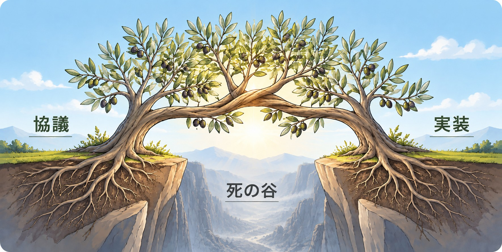

OLIVEとは
議論する場はあった。動くための場がなかった。
課題も処方箋も出揃っている。足りないのは、地域全体を俯瞰して未来を考え、翌日から動く組織体 ― 「アクションタンク」です。OLIVE（Okayama Leading Initiative for Value creation and Education）は、岡山大学を代表機関とする産学官金言のプラットフォームとして、それを引き受けます。

足りなかったもの
話す場 ― シンクタンクから、動く場 ― アクションタンクへ。
話す場 ― シンクタンク
話す場はある。決めたことを翌日から動かす人がいない。
- 協議会・審議会・コンソーシアムで方針は決まる。だが実行は各機関に持ち帰り、人も予算もつかない
- 議論内容が社会実装に届かず消える「死の谷」。大学・自治体・企業のあいだに組織・制度・財源の空白
動く場 ― アクションタンク ＝ OLIVE
地域全体を俯瞰し、未来を考え、翌日から動く組織体。
- 地域全体を俯瞰する ― 大学・高校・自治体・企業・若者を一枚の地図で見て、需給と機会をデータで見立てる
- 未来を考え、翌日から動く ― 法人格と専任人員を持ち、PBL・連携開設科目・リスキリングを自ら設計・運営する
プラットフォーム
産学官金言のトップによる役員会と、実務者による運営委員会。4部会・ユースボード・アドバイザリーボードを束ね、2040年のグランドデザインを検討する。
（一般社団法人・設立準備中）
プラットフォームの決定を実行する法人格。事務局・契約・財源・コーディネーターを担い、窓口・調整・移動・保険などの間接コストを引き受けて、大学は学びに集中する。
※ 法人設立・大学等連携推進法人の認定は手続き中の事項です（令和8年10月時点）
地域にとっての大学の価値
大学の価値は多様 ― だが、まだ全部は見えていない。
三つの魅力を大学はどう支え、学生は在学中にそれをどう体感するか。学ぶ魅力があればそこで学び、働く魅力があればそこで働き、暮らす魅力があれば還ってくる。
学ぶ魅力
学ぶ魅力があれば、そこで学ぶ ― 進学と学び直しの入口を県内に保つ
- 人を育てる地域の産業・医療・教育を担う人材を、地域で育てる
- 知を創る研究・調査で地域課題に根拠を与える。需給の見取り図もここから
- 世界とつなぐ海外大学・留学生のネットワーク。地域を外の目で映し返す窓
- 戻って学び直す社会人のリスキリング・社会人研究員。一度出た人がもう一度つながる場所
働く魅力
働く魅力があれば、そこで働く ― 在学中に地域の仕事を体感し、就職の入口を県内に保つ
- 担い手を送り出す卒業生が県内の企業・病院・学校へ。採用の母集団をつくる
- 企業と一緒に変える共同研究・社会実装・PBLで企業の課題を学びの題材に。DX・GX・AX人材を育てる
- 資金と人を呼び込む競争的資金・共同研究・留学生で、県外から資金と人を流入させる経済主体
- 在学中に地元企業と出会うPBL・長期インターンで、就活前に仕事の選択肢を見える化
暮らす魅力
暮らす魅力があれば、還ってくる ― 在学中に地域で暮らす経験が、戻る理由になる
- 医療・教育を維持する附属病院・教員養成・看護養成が、県北・県西部のエッセンシャルワーカーを支える
- 文化と知の拠点図書館・公開講座・市民協働。まちに「考える場所」と「集まる場所」を持つ
- 関係人口・UIJターンの受け皿PBLで通い続ける学生、戻ってくる卒業生、国内留学・海外交流で呼び込む人
- 魅力を外の目で見つける外から来た人の目を通して地域の魅力が分かる。外の目が入ることが、残る理由にもなる
OLIVEの4つの機能
「学ぶ・働く・暮らす」の魅力を、誰が・どう高めるのか。
学ぶ・働く・暮らすの魅力は、学校・企業・自治体のどこか一つでは高められない。岡山には「話す場」はあるが、翌日から動かす実行部隊が足りない。OLIVEはその実行部隊として、大学の価値を「使える状態に保つ」4つの機能を一体で持ちます。
①つなげる
HUB既存のコミュニティ・コンソーシアムを有機的につなげ、情報も集める。各機関が「弱さ」を開示し合い、互いの強みで補う
- 大学コンソーシアム岡山・OI-Start・研究協力会など既存の基盤の上に建て、新しく作らず拡張する
- 自治体と連携した学びのフィールドの設計。高校・大学・企業の接点を一本の窓口に
- 「学生と何かやりたい」の相談窓口を一本化
②見立てる
THINK TANK需給ギャップと、地域における大学の役割を見立てる
- 各大学の就職先・進路データを県全体で通して見る
- 人材需給ギャップをダッシュボードで分析
- カリキュラム改編・リスキリング領域の方向を示し、各大学が地域で担う役割（強み・分担）を見立てる
③動かす
ACTION TANK学ぶ・働く・暮らすの魅力を、PBL・連携開設科目・リスキリングで在学中に体感できる形にする
- 企業課題を題材に、複数大学混成で現地現物の学びをつくる
- 大学間連携専門コーディネーターが地域との調整を引き受ける
- お試しPBL → 大学間連携による集中講座 → 連携開設科目へ段階的に単位化
④還す
REINVEST企業の教育投資が採用として戻り、次世代へ再投資
- 地域企業と学生の接点・交流機会を創出し、教育投資が採用に直結する仕組みを整備
- 有料会員制度（リクルートサービス）を運営し財政基盤に
- 会費収益等を幼小中高・大学生の学びに戻す（再投資）
PBLの位置づけ
PBLは課題解決の請負ではなく「探査機」 ― 地域を探り、学生が自分自身を探る。
探査機には二つの意味があります。地域にとっては大学との新しい関係や意味を生む装置、学生にとっては受動から能動へ転じる装置。
大学と地域の新しい関係や意味を生む
プラットフォームから探査機を飛ばす。複数大学の学生が企業・自治体・住民の現場に入る
- 企業：CFP算定・現場の実課題 ／ 自治体：実課題・施策反映 ／ 住民・中高生：暮らしの現場・学びの型
- 課題が解けることは成果の一つにすぎない。持ち帰るのは学びの型、地域の需要の記録、新しいつながり
- 探査の記録が積み上がるほど、地域にとっての大学の価値が見えてくる
- 窓口・調整・移動・保険などの間接コストはOLIVEが持ち、大学は学びに集中する
知的修羅場を通して、受動の学びから能動の学びへ
正解のない問いにぶつかると、それまで頼っていた「正解・手順・評価」の外で考えざるを得なくなる
- 不安に耐えながら、その不安の正体 ― 自分を動かしていたもの ― を理解できる可能性がある。理解できたとき、駆り立てられる受動から、自分の関心で動く能動へ転じ、学びが開かれる
- 答えのないテーマは入口。自分で決めてよい余地、小さく「できた」を積む段階、失敗しても見捨てられない仲間と大人、振り返りの時間が足場になる
Olive Note ― 名前に込めた話